Gentle Way launch: verification
What was built
www.gentleway.ink serves the Gokyo no Waza poster with the full Monument Labs product SEO package (matching Camera Shy / cosmo / Clean Markdown): a real mark (the belt knot) with the canon favicon set and a 1200×630 OG card; site.webmanifest, robots.txt, llms.txt; canonical + OG/Twitter meta + JSON-LD on every route; a sitemap with image entries; 40 per-throw pages at /throws/[id] so the 25k words of mechanic / analogy / why-it-maps prose are in server HTML instead of hidden in a modal; a styled 404; vercel.json redirects (.vercel.app host and trailing slashes); a brand row and a "Built by Monument Labs" footer; and a Gentle Way tile, Product node and footer link on monumentlabs.io. The 40 analogies, images, palette, fonts and the hover / flip / modal interaction are unchanged.
Sprint 0: Mark + Kyle's manual toggles Complete (Kyle items pending)
Kyle picked option 7 from the gallery (../logo-options-gentleway.html): the belt knot, obi reduced to band + knot + two tails, with a tighter corner radius than the gallery render, in ink #1c1a17. Delivered as src/public/favicon.svg (64×64 viewBox, four filled rects) and src/app/components/AppLogo.vue (currentColor, optional wordmark). The mark's legibility at tab size was checked during Sprint 0; it appears at 512 px below (Sprint 1) and in the tab-sized header row on every page (Sprint 2).
- Vercel:
gentleway.ink(primary) andwww.gentleway.ink(308 to apex) attached and verified on projectgokyo-poster. - Kyle: GoDaddy
A @ 216.150.1.1,CNAME www → 7fe738d5defe2fc1.vercel-dns-016.com(in progress 2026-08-21 evening). - Kyle: Google Search Console DNS TXT for the Domain property.
- Kyle: Vercel dashboard, enable Web Analytics on the project.
Sprint 1: Brand assets + static SEO files Complete
The brand-assets skill rendered the canon set from favicon.svg into src/public/: favicon.ico (16/32/48, replaces the starter icon), favicon-96.png, apple-touch-icon.png (180²), icon-192-maskable.png, icon-512-maskable.png, og-image.png (1200×630). Sizes confirmed with sips. Plus site.webmanifest (parses as JSON, two maskable icons + 96 png + svg), robots.txt (allow all, explicit allows for the AI crawlers, Sitemap: line) and llms.txt (description, Monument Labs attribution, page patterns, notes). None of the three contain an em dash.
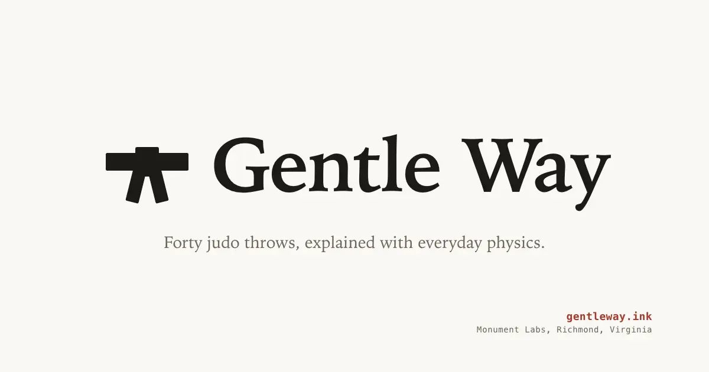
gentleway.ink URL block bottom-right over "Monument Labs, Richmond, Virginia", paper background. Proves the card matches the live page's fonts and palette and has no overflow.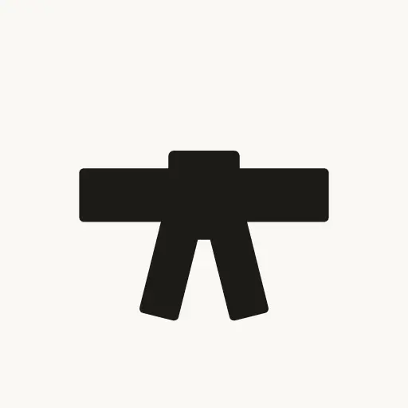
Sprint 2: Head, JSON-LD, brand row, footer, /throws/[id], error page, redirects Complete with deviations
npx nuxi typecheck, npm run lint and npm run build green. The build prerenders 84 routes: /, 40 /throws/*, /sitemap.xml, the sitemap stylesheet and the per-route payloads (ls .output/public/throws | wc -l = 40). Everything below was checked against the server HTML in .output/public/ and a local Nitro preview, not the hydrated DOM.
Server HTML head on /
From samples/index_head.html (stylesheet and module preloads omitted). One description, one canonical, the four icon links declared once, absolute OG image, and the index title override so the tab does not read "Gentle Way · Gentle Way".
<title>Gentle Way · Gokyo no Waza, the forty throws of Kodokan judo</title>
<link rel="icon" href="/favicon.ico" sizes="48x48">
<link rel="icon" href="/favicon.svg" type="image/svg+xml">
<link rel="apple-touch-icon" href="/apple-touch-icon.png" sizes="180x180">
<link rel="manifest" href="/site.webmanifest">
<meta name="theme-color" content="#faf8f4">
<link rel="canonical" href="https://gentleway.ink">
<meta name="description" content="An interactive poster of the Gokyo no Waza, the forty throws of Kodokan judo, drawn in sumi-e ink and paired with everyday scenes that make the mechanics click.">
<meta property="og:title" content="Gentle Way · Gokyo no Waza, the forty throws of Kodokan judo">
<meta property="og:type" content="website">
<meta property="og:site_name" content="Gentle Way">
<meta property="og:url" content="https://gentleway.ink">
<meta property="og:image" content="https://gentleway.ink/og-image.png">
<meta property="og:image:width" content="1200">
<meta property="og:image:height" content="630">
<meta property="og:image:type" content="image/png">
<meta property="og:image:alt" content="Gentle Way: the forty throws of Kodokan judo">
<meta property="og:locale" content="en_US">
<meta name="twitter:card" content="summary_large_image">JSON-LD on /
From samples/index_ld.json: one application/ld+json script that JSON.parses, a @graph of four nodes. The Organization uses the global id https://monumentlabs.io/#org; the ItemList carries all 40 throws in Gokyo order (positions 1 to 40, three shown).
{
"@context": "https://schema.org",
"@graph": [
{ "@type": "Organization", "@id": "https://monumentlabs.io/#org", "name": "Monument Labs",
"url": "https://monumentlabs.io", "logo": "https://www.monumentlabs.io/og-image-monument.png",
"sameAs": ["https://www.linkedin.com/company/106072838"] },
{ "@type": "WebSite", "@id": "https://gentleway.ink/#website", "url": "https://gentleway.ink",
"name": "Gentle Way", "description": "An interactive poster of the Gokyo no Waza, ...",
"publisher": { "@id": "https://monumentlabs.io/#org" }, "inLanguage": "en" },
{ "@type": "WebApplication", "@id": "https://gentleway.ink/#app", "name": "Gentle Way",
"applicationCategory": "EducationalApplication", "applicationSubCategory": "Interactive poster",
"operatingSystem": "Any", "browserRequirements": "Requires JavaScript",
"isAccessibleForFree": true, "offers": { "@type": "Offer", "price": "0", "priceCurrency": "USD" },
"image": "https://gentleway.ink/og-image.png", "datePublished": "2026-08-22",
"about": { "@type": "Thing", "name": "Gokyo no Waza", "alternateName": "五教の技",
"sameAs": "https://en.wikipedia.org/wiki/Gokyo_(judo)" },
"featureList": [ "All forty throws of the 1920 Kodokan Gokyo in canonical order", "... 4 more" ],
"publisher": { "@id": "https://monumentlabs.io/#org" }, "creator": { "@id": "https://monumentlabs.io/#org" } },
{ "@type": "ItemList", "@id": "https://gentleway.ink/#gokyo", "name": "Gokyo no Waza",
"numberOfItems": 40, "itemListOrder": "ItemListOrderAscending",
"itemListElement": [
{ "@type": "ListItem", "position": 1, "name": "Deashi Harai", "url": "https://gentleway.ink/throws/deashi-harai" },
{ "@type": "ListItem", "position": 14, "name": "Tai Otoshi", "url": "https://gentleway.ink/throws/tai-otoshi" },
{ "@type": "ListItem", "position": 40, "name": "Yoko Gake", "url": "https://gentleway.ink/throws/yoko-gake" }
] }
]
}Server HTML head on /throws/tai-otoshi
From samples/tai-otoshi_head.html. Title carries the · Gentle Way suffix from app.vue's template; description is whole sentences of the mechanic, ≤155 chars (all 40 checked); OG image is the per-throw JPEG; canonical has no trailing slash.
<title>Tai Otoshi (体落) · Body Drop · Gentle Way</title>
<link rel="canonical" href="https://gentleway.ink/throws/tai-otoshi">
<meta name="description" content="Tori blocks uke's shin with an outstretched leg, a low bar across the ankle, and hurls uke's upper body forward and down past it.">
<meta property="og:title" content="Tai Otoshi (体落) · Body Drop">
<meta property="og:url" content="https://gentleway.ink/throws/tai-otoshi">
<meta property="og:image" content="https://gentleway.ink/og/tai-otoshi.jpg">
<meta property="og:image:width" content="1200">
<meta property="og:image:height" content="630">
<meta property="og:image:type" content="image/jpeg">
<meta property="og:image:alt" content="Tai Otoshi: the throw and its everyday analogy">
<meta name="twitter:card" content="summary_large_image">JSON-LD on a throw page
From samples/tai-otoshi_ld.json: a WebPage with primaryImageOfPage and two ImageObjects (throw + analogy), each credited to Monument Labs via the global Organization id. The second ImageObject is identical in shape with the analogy URL and caption "Dog bolts at the low bench: the everyday analogy for Tai Otoshi".
{ "@type": "WebPage",
"@id": "https://gentleway.ink/throws/tai-otoshi", "url": "https://gentleway.ink/throws/tai-otoshi",
"name": "Tai Otoshi (体落) · Body Drop",
"description": "Tori blocks uke's shin with an outstretched leg, a low bar across the ankle, and hurls uke's upper body forward and down past it.",
"isPartOf": { "@id": "https://gentleway.ink/#website" }, "datePublished": "2026-08-22",
"primaryImageOfPage": {
"@type": "ImageObject", "contentUrl": "https://gentleway.ink/img/throws/tai-otoshi-lg.webp",
"width": 1024, "height": 1024,
"caption": "Tai Otoshi (Body Drop), sumi-e ink drawing of the judo throw",
"creator": { "@id": "https://monumentlabs.io/#org" }, "creditText": "Monument Labs",
"description": "AI-generated sumi-e rendering" },
"image": [ "...the same ImageObject", "...the analogy ImageObject (img/analogies/tai-otoshi-lg.webp)" ],
"about": { "@type": "Thing", "name": "Tai Otoshi", "alternateName": ["体落", "Body Drop"],
"description": "Tori blocks uke's shin ... so uke pitches straight over." },
"publisher": { "@id": "https://monumentlabs.io/#org" }, "creator": { "@id": "https://monumentlabs.io/#org" },
"inLanguage": "en" }Sitemap and status codes
samples/sitemap.xml as served by the Nitro preview: 41 <url> (/ + 40 throws), 160 <image:image> (80 on / from the grid, 2 per throw page), no trailing-slash variants, no <lastmod>. Table from samples/curl_status.txt:
Local Nitro preview (node .output/server/index.mjs, 2026-08-21)
/ 200 text/html
/sitemap.xml 200 text/xml (41 <url>, 160 <image:image>: 80 on /, 2 per throw page)
/robots.txt 200 text/plain
/llms.txt 200 text/plain
/site.webmanifest 200 application/manifest+json
/og/tai-otoshi.jpg 200 image/jpeg
/og-image.png 200 image/png
/throws/tai-otoshi 200 text/html
/throws/tai-otoshi/ 200 (no-slash redirect is vercel.json trailingSlash:false, not Nitro)
/throws/nope 404 (JSON body without Accept: text/html; HTML error page with it,
title "Throw not found · Gentle Way", robots noindex)Also checked: zero em dashes across all 41 prerendered pages; the throw page's mechanic text sits under <h2>Mechanic</h2> in the server HTML.
Browser (Playwright against npm run dev, Chromium 1280 and 390 wide)
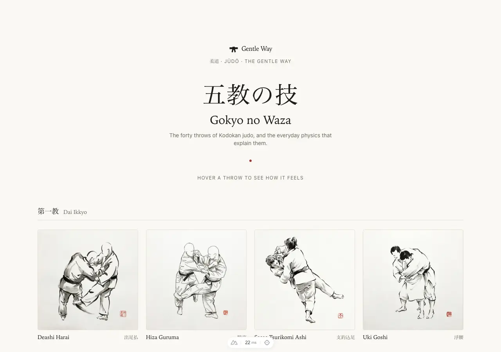
AppFooter renders the same on throw pages.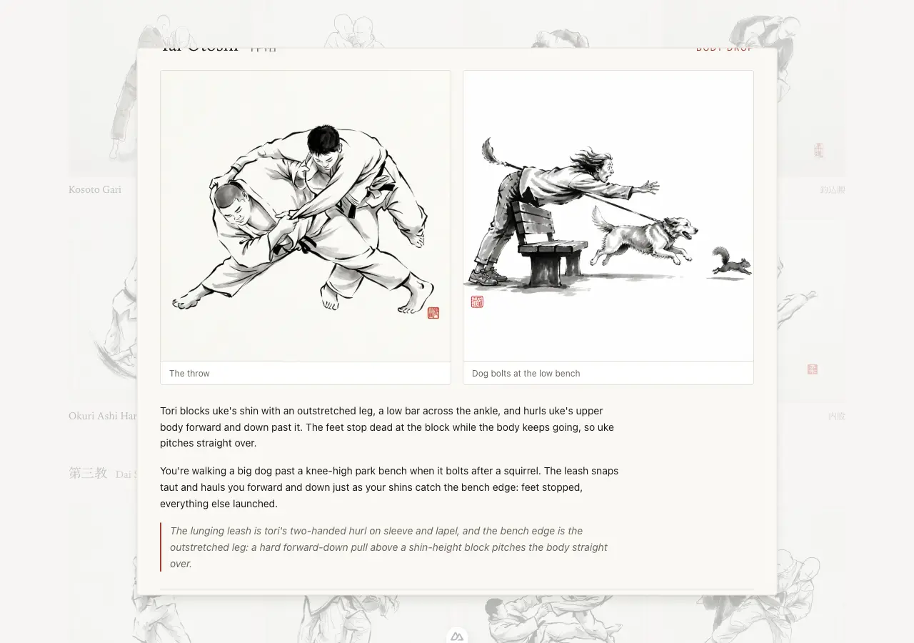
/: the card is now an <a href="/throws/tai-otoshi"> for crawlers and modifier clicks, but a plain click still flips / opens as before. The modal's footer "Open page →" link (below the fold here) navigates to the throw page.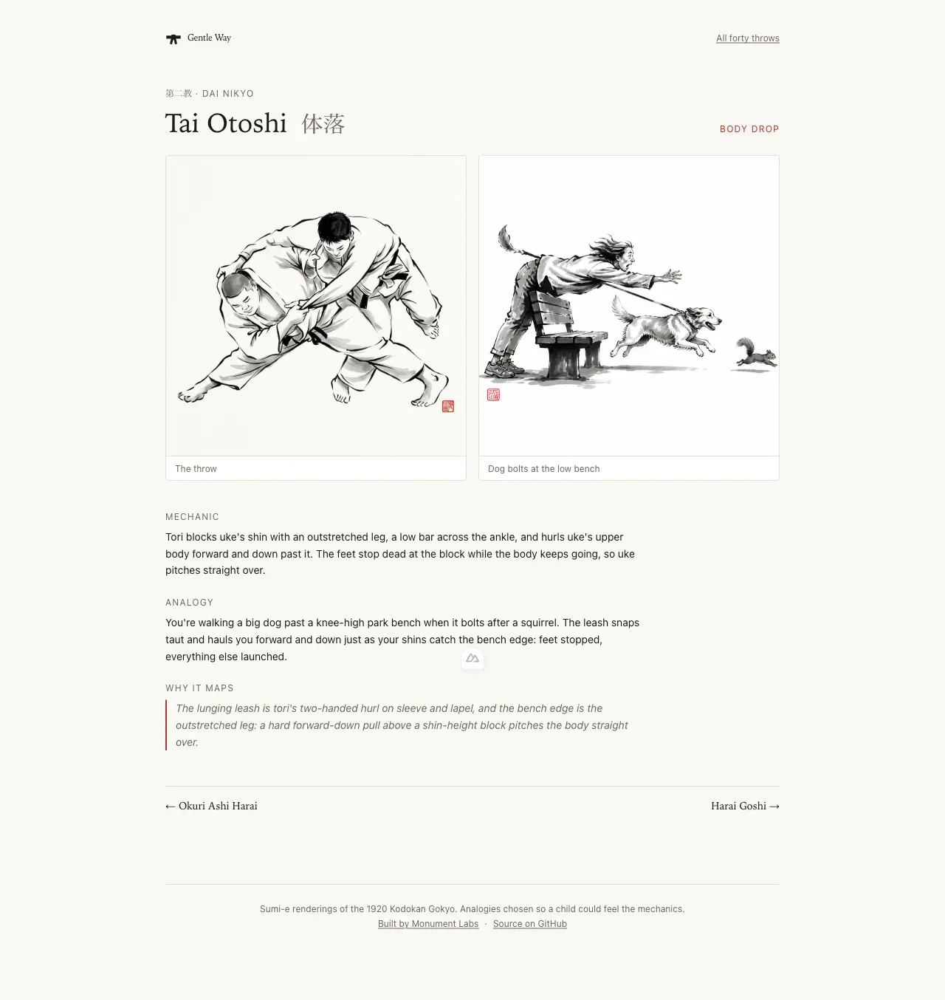
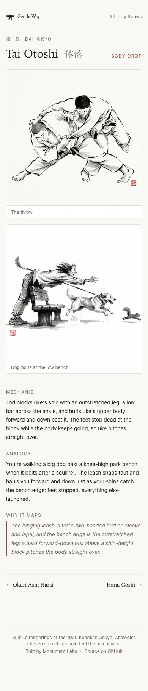
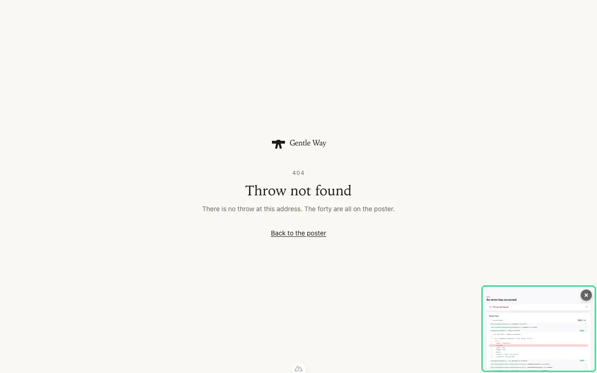
error.vue on paper: mark + wordmark, status "404", h1 "Throw not found", one sentence, "Back to the poster" link. Title "Throw not found · Gentle Way", robots: noindex. The green Nuxt devtools overlay bottom-right is dev-only.Sprint 3: List Gentle Way on monumentlabs.io Complete with deviations
In ~/Programming/Workspace/MonumentLabsSite (separate repo, separate commit, also gated on Kyle's go): a seventh product tile, a makesOffer Product node with the byte-identical tagline, a footer link, the clipart product-gentleway.webp, and "@id": "https://monumentlabs.io/#org" on the Organization node so Gentle Way's and Clean Markdown's references resolve. Typecheck and lint green (one pre-existing error inside node_modules/@nuxt/image, unrelated). Verified with headless Playwright against the dev server on :3080; makesOffer count = tile count = 7.
Tail of samples/monumentlabs_jsonld.json (the / @graph):
{ "@context": "https://schema.org", "@type": "Organization", "@id": "https://monumentlabs.io/#org",
"name": "Monument Labs", "url": "https://monumentlabs.io",
"description": "Monument Labs is a product studio in Richmond, Virginia. We build and operate our own AI products.",
...
"makesOffer": [
{ "@type": "Product", "name": "Margin", ... },
... Daylight Legal, Riff, Call Compass, Clean Markdown, Camera Shy ...
{ "@type": "Product", "name": "Gentle Way",
"description": "The forty throws of Kodokan judo, and the everyday physics that explain them.",
"url": "https://gentleway.ink" }
] }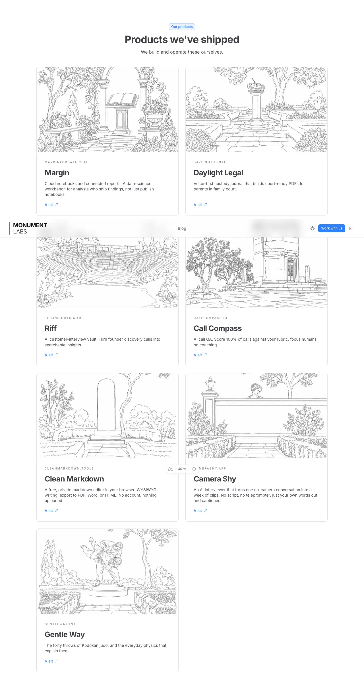
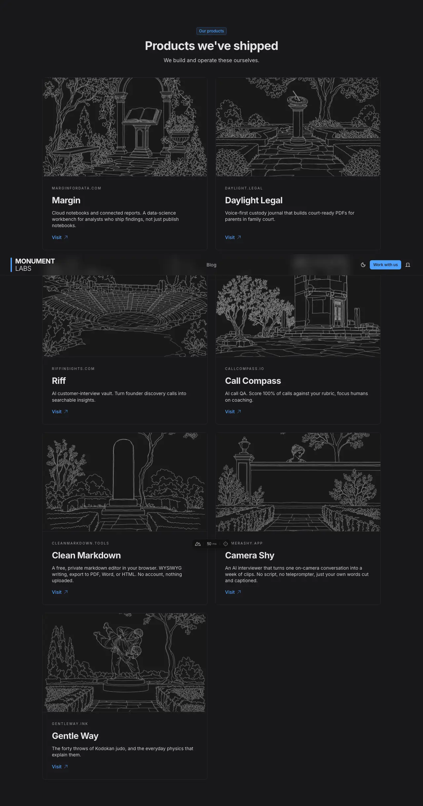
dark:invert; line weight holds up against the other six.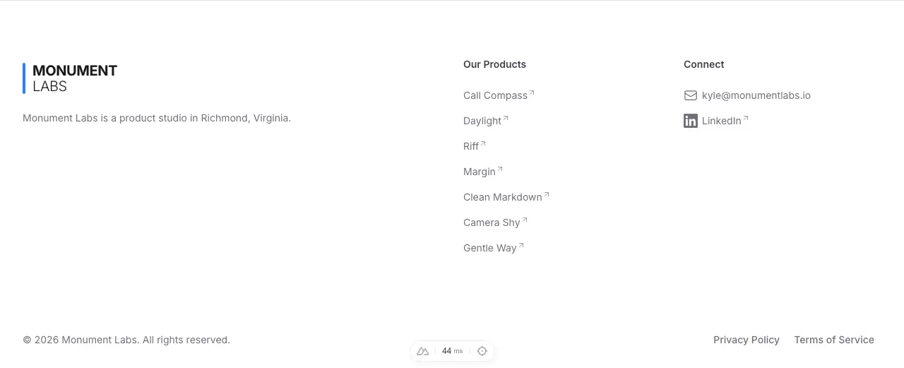
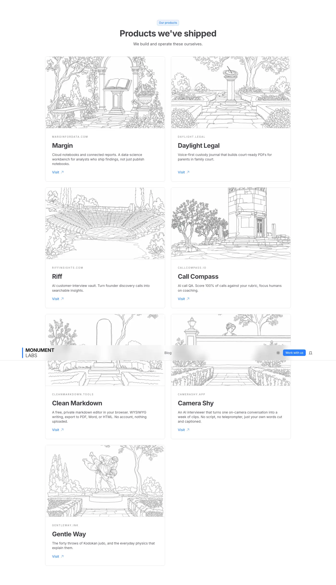
2d4d470 deployed: the Gentle Way tile renders in the products grid in production.Sprint 4: Launch checks, docs sync, verification artifact Complete (4.4 Kyle: GSC)
Production checks run 2026-08-21 against https://www.gentleway.ink (Vercel, after the www-canonical flip). Raw outputs: samples/prod_curl_status.txt, samples/prod_index_ld.json, samples/prod_tai-otoshi_ld.json, samples/prod_lighthouse.txt.
- 4.1 DNS/TLS + host redirects: cert valid on
www;gentleway.ink/andgokyo-poster.vercel.app/both 308 →https://www.gentleway.ink/;/throws/tai-otoshi/308 → no slash;/throws/nope404. - 4.2 Prod crawl: 41/41 sitemap
<loc>return 200; all on the www host, no trailing slashes; 160<image:image>;robots.txt,llms.txt,site.webmanifest, the icon set,og-image.pngand/og/*.jpgall 200. - 4.3 Validators: Schema.org 0 errors / 0 warnings on both routes; Rich Results Test 0 errors (Carousels + Software Apps on
/, Image Metadata on the throw page; only optional-field notices); opengraph.xyz renders the house card and the tai-otoshi diptych; Lighthouse mobile SEO 100 on both routes. - 4.4 Kyle: GSC Domain property verified, sitemap submitted, indexing requested on
/and 2 to 3 throw pages. - 4.5 Docs: root
README.md("The site" +internal_docsbullet), planREADME.md,~/claude-ops/monument/projects/gentle-way/STATE.md,~/.claude/CLAUDE.mdrow,~/claude-ops/conventions/project_bootstrap.mdSEO note.src/README.mdwas rewritten in Sprint 2 (2.15). - 4.6 Optional: rename Vercel project / GitHub repo (Kyle's call, not required).
- 4.7 This page +
screenshots/+samples/.
4.1 Host, redirects, status codes (curl)
| Request | Result |
|---|---|
https://gentleway.ink/ | 308 → https://www.gentleway.ink/ |
https://gokyo-poster.vercel.app/ | 308 → https://www.gentleway.ink/ (vercel.json host redirect works alongside the Nitro output) |
https://gentleway.ink/throws/tai-otoshi | 308 → https://www.gentleway.ink/throws/tai-otoshi |
https://www.gentleway.ink/throws/tai-otoshi/ | 308 → no trailing slash (trailingSlash: false confirmed on Vercel) |
/, /throws/tai-otoshi | 200 text/html |
/throws/nope | 404 |
/sitemap.xml, /robots.txt, /llms.txt, /site.webmanifest | 200 (xml / text / text / application/manifest+json) |
/favicon.svg, /favicon.ico, /apple-touch-icon.png, /icon-192-maskable.png, /icon-512-maskable.png | 200 |
/og-image.png, /og/uchi-mata.jpg, /og/tai-otoshi.jpg | 200 (png / jpeg / jpeg) |
4.2 Sitemap crawl
| Check | Result |
|---|---|
<loc> entries | 41 (/ + 40 throw pages) |
Each <loc> fetched | 41/41 HTTP 200 |
| Host / trailing slash | 41/41 start with https://www.gentleway.ink; 0 trailing slashes (root is https://www.gentleway.ink/) |
<image:image> entries | 160 (80 on /, 2 per throw page), all image:loc on the www host |
Server HTML on prod (curl, not browser)
| Check | / | /throws/tai-otoshi |
|---|---|---|
<link rel="canonical"> | https://www.gentleway.ink | https://www.gentleway.ink/throws/tai-otoshi |
meta name="description" count | 1 (160 chars) | 1 (129 chars, first sentences of the Mechanic) |
og:image / og:url | https://www.gentleway.ink/og-image.png / https://www.gentleway.ink | https://www.gentleway.ink/og/tai-otoshi.jpg / .../throws/tai-otoshi |
JSON-LD parses (JSON.parse) | yes: Organization, WebSite, WebApplication, ItemList (40 items, www URLs); 0 bare-apex references | yes: WebPage with two ImageObjects; 0 bare-apex references |
| Em dashes in HTML | 0 | 0 |
| Prose in server HTML | n/a | Mechanic / Analogy / Why it maps headings and the Mechanic paragraph ("Tori blocks uke's shin with an outstretched leg...") present |
4.3 Validators
| Tool | / | /throws/tai-otoshi |
|---|---|---|
| Schema.org validator | 0 errors, 0 warnings, 3 items (ItemList, WebSite, WebApplication) | 0 errors, 0 warnings, 2 items (WebPage, CreativeWork) |
| Google Rich Results Test | Crawled OK; 2 valid items: Carousels (1), Software Apps (1). 0 errors; 1 non-critical notice (optional aggregateRating missing) | Crawled OK; 3 valid Image Metadata items. 0 errors; non-critical notices only (optional license, copyrightNotice, acquireLicensePage; creator is an @id reference) |
| opengraph.xyz | house card renders, 1200×630 PNG, 43 KB; 0 errors | tai-otoshi diptych renders, 1200×630 JPEG, 55 KB; 0 errors (its "meta description is short, 15 chars" warning is a parser quirk: it stops at the apostrophe in "uke's"; the served tag is 129 chars) |
| Lighthouse mobile (perf preset, headless Chrome) | SEO 100, Performance 79, LCP 4.4 s, FCP 2.9 s, SI 3.6 s, TBT 30 ms, CLS 0 (a first run scored SEO 92 because the robots-txt fetch timed out inside Lighthouse; curl and the re-run both see /robots.txt as 200) | SEO 100, Performance 92, LCP 2.9 s, FCP 2.4 s, SI 2.6 s, TBT 10 ms, CLS 0 |
Rich-result types are incidental; the target was zero errors, which both routes meet. Lighthouse's throttled LCP on / is the first lazy-loaded grid image; the throw page's LCP is its 1024 px sumi-e image. Browser console on prod shows one 404 for /2d8f89d6acddc5f1/script.js: Vercel Web Analytics is not yet toggled on in the dashboard (Kyle, Sprint 0.5), so @vercel/analytics logs and moves on.
/. 0 errors, 0 warnings; ItemList, WebSite and WebApplication detected from the production HTML.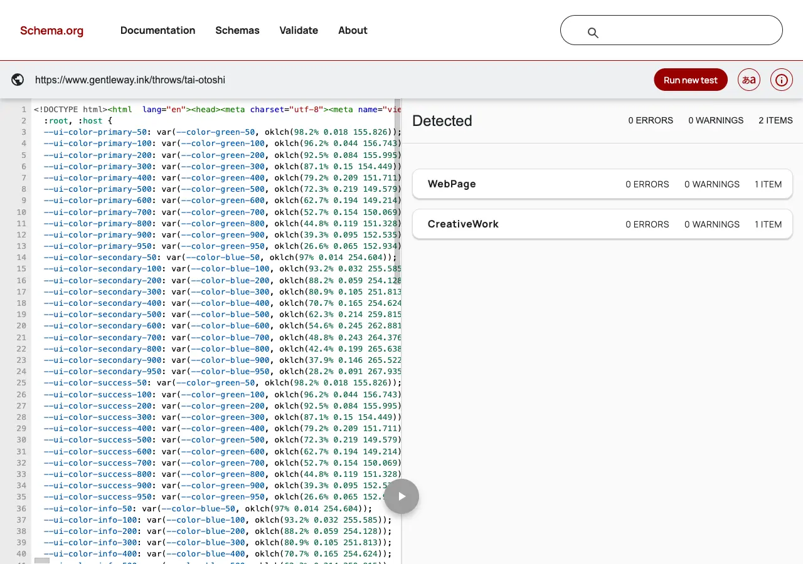
/throws/tai-otoshi. 0 errors, 0 warnings; WebPage plus the nested CreativeWork (ImageObject) items.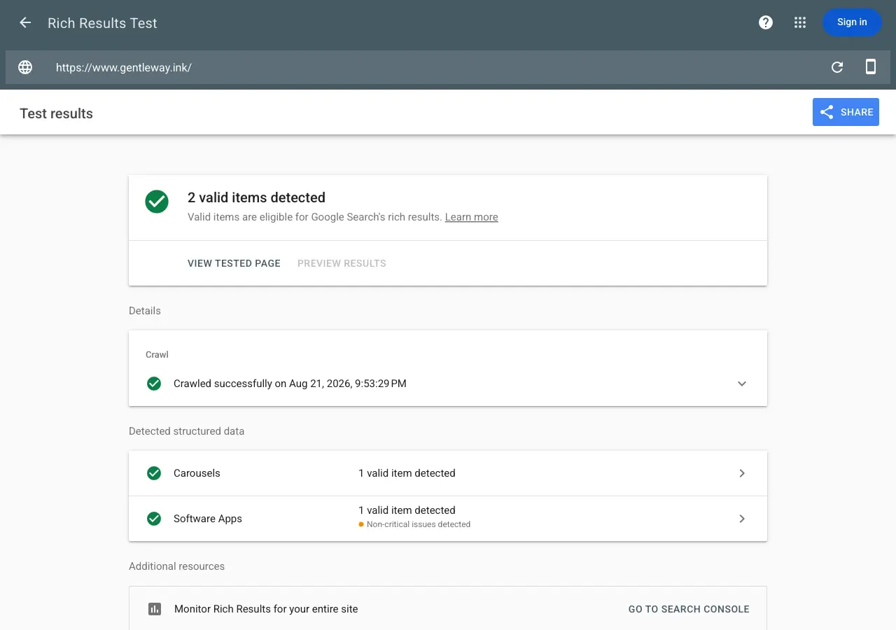
/. Crawled successfully; Carousels and Software Apps detected as valid items, no errors.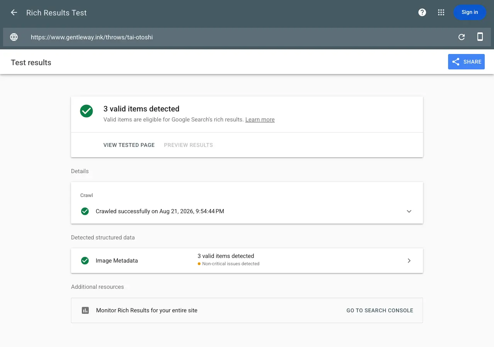
/throws/tai-otoshi. Crawled successfully; three valid Image Metadata items, no errors (only optional-field notices).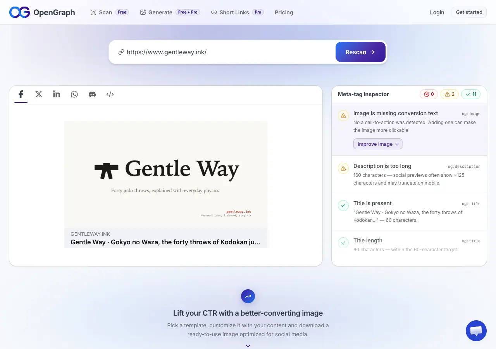
/. opengraph.xyz fetched the production head and renders the house card (mark, wordmark, tagline, gentleway.ink, Monument Labs credit); 0 errors in its tag inspector.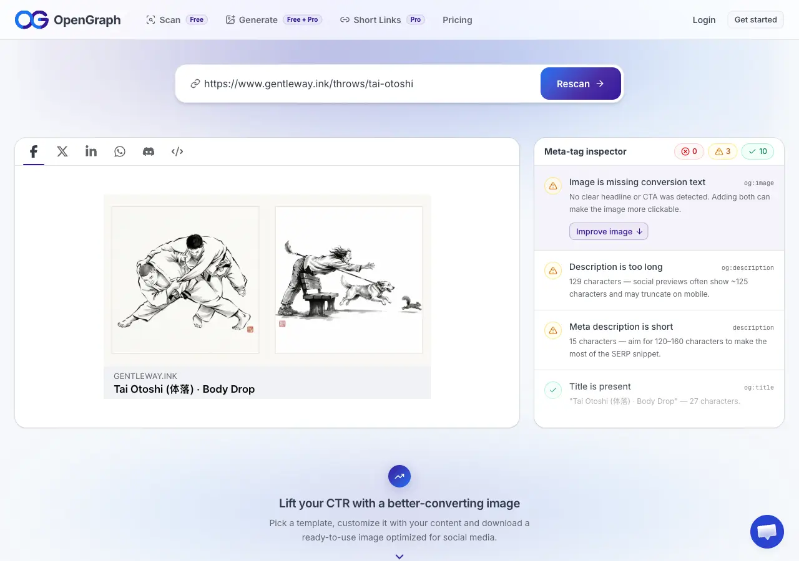
/throws/tai-otoshi. The per-throw diptych JPEG (throw + dog-and-bench analogy) renders with the "Tai Otoshi (体落) · Body Drop" title.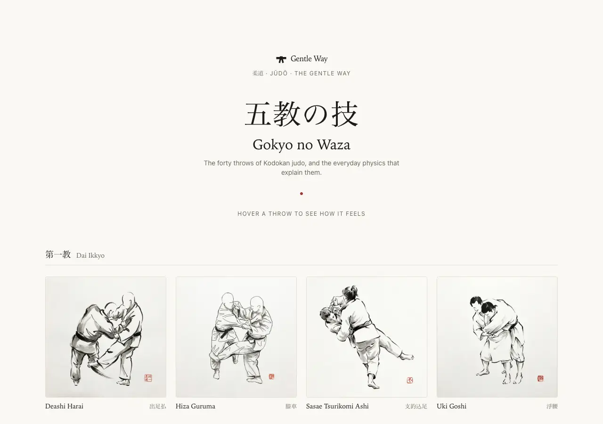
/ at 1280 px. Brand row (mark + wordmark + etymology), poster title, grid. document.title is "Gentle Way · Gokyo no Waza, the forty throws of Kodokan judo"; the head links favicon.ico, favicon.svg and apple-touch-icon.png. Clicking the Tai Otoshi card opened the modal with the URL still /; "Open page →" navigated to /throws/tai-otoshi.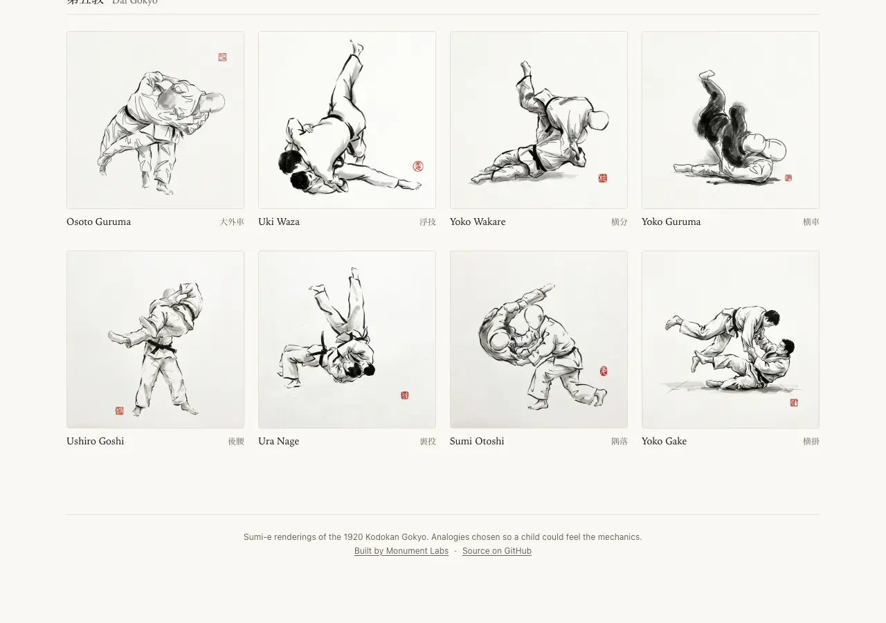
/ footer. "Built by Monument Labs" → https://monumentlabs.io/ and "Source on GitHub" under the provenance line.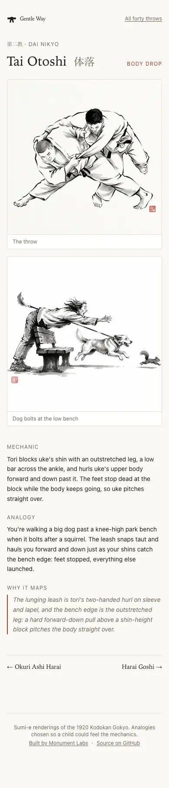
/throws/tai-otoshi at 390 px (full page). Both images load, Mechanic / Analogy / Why it maps prose, prev/next links; clicking "Harai Goshi →" landed on /throws/harai-goshi whose prev link points back at Tai Otoshi.End-to-end run-through
The golden path a visitor (or a crawler) takes, in order. Each step is proven by the screenshot named.
- Shared link renders the OG card (
sprint1_og_card): mark, wordmark, tagline,gentleway.ink, Monument Labs credit. - Land on
/(sprint2_index_desktop): brand row, etymology line, the poster title and grid; head carries canonical, OG, four icon links, JSON-LD with the 40-itemItemList. - Click a card (
sprint2_index_modal): the modal opens, URL stays/; the card is an<a>so cmd-click and crawlers get the page. - Modal "Open page →" navigates to
/throws/tai-otoshi. - Throw page, desktop and mobile (
sprint2_throw_desktop,sprint2_throw_mobile): pair + Mechanic / Analogy / Why it maps in server HTML, per-throw OG JPEG andWebPageJSON-LD in the head, prev/next wrap around the Gokyo. - Bad URL (
sprint2_error_404): styled 404 on paper,noindex, link back to the poster. - Back on monumentlabs.io (
sprint3_ml_tiles_light,sprint3_ml_footer): the product tile and footer link point atgentleway.ink; the Organization@idthe poster's JSON-LD references now exists.
Not exercised in the browser: cmd-click on a card (modifier clicks are let through to the browser in ThrowCard.onClick; same code path as any <a href>) and mobile tap-to-flip (desktop Chromium reports hover: hover even at 390 px; the logic is unchanged from before this work).
Gotchas / deviations
Routine calls made during execution, collected from each sprint's Deviations block in the plan.
- OG tagline (S1): the long tagline auto-wrapped to two lines with an orphan "them.", so the card uses the short one, "Forty judo throws, explained with everyday physics." The long tagline is unchanged everywhere else (
llms.txt, the poster, the ML tile). favicon.ico(S1): overwrote the starter icon (16/32/48). Mark sits slightly below optical center at 512 but inside the maskable safe zone; SVG untouched.SITE.description(S2): trimmed from the plan's 168-char draft to 160 chars.site.webmanifestandllms.txtwere then brought in line; all three carry the same string now (checked 2026-08-21).ThrowCardis a plain<a>, notNuxtLink(S2):NuxtLink's own click handler SPA-navigated before a child@click.preventcould stop it (seen in the browser). The handler lets modifier / non-left clicks through andpreventDefaults plain clicks, so flip / modal behavior is preserved. Server HTML is identical to whatNuxtLinkwould emit.- Lint reflow (S2):
eslint --fixreorderednuxt.config.tskeys and putAppLogo.vueattributes one per line; a pre-existingmax-statements-per-lineerror inscripts/build-images.mjswas fixed. No behavior change. build-og.mjs(S2): each 540² image also gets a 2 px#e5dfd4frame to match the poster's card borders (the plan only named the rule between). JPEGs are 43 to 71 KB, under the estimate.- Throw meta descriptions (S2): whole sentences from
mechanicwhile ≤155 chars; 15 throws whose first sentence runs longer are cut at a word boundary with an ellipsis. error.vue(S2): usestitleTemplateitself sinceapp.vueis not rendered on the error route; shows a small status line above the h1, one sentence, "Back to the poster".- Throw page extras (S2): an "All forty throws" text link top-right beside the mark (both go to
/), and the content is wrapped in<main>(sitemap image discovery + plain semantics). - Dependency versions (S2):
@nuxtjs/sitemap^8.5.0 (plan said ^8.3.4) and@vercel/analytics^2.0.1. Dev logs "Debug mode" for analytics; production needs Kyle's dashboard toggle. - Footer extraction (S2): provenance sentence byte-identical; the old lone GitHub link became "Source on GitHub" next to "Built by Monument Labs".
- Clipart prompts (S3): the first two ("two wrestlers mid-throw", relief stele + statue group) were rejected by the OpenAI image safety filter (
sexual, 2 × 400). Rephrased to "two fully robed figures in belted tunics ... judo hip throw"; both generated. Kept both PNGs and bothvariants.mjsentries (a/b precedent); shipped b, the statue group on a round plinth, because the relief's figures are too small inside the 5/3 tile crop. - Site copy (S3, task 3.6 done): the four site / OG / Organization / WebSite descriptions on monumentlabs.io now end "...We build and operate our own AI products." and the
keywordsmeta no longer enumerates four product names. - Not committed (S2, S3): both repos' changes are in the working tree only, gated on Kyle's go. Kyle's long-running ML dev server on :3080 was reused for verification and left running.
- Trailing-slash redirect: the local Nitro preview serves
/throws/tai-otoshi/as 200; the 308 to the no-slash URL comes fromvercel.jsontrailingSlash: false. Confirmed on Vercel in Sprint 4.1. - Canonical host flipped to www after the first deploy (S4): the plan and the first deploy made the apex canonical with
www308-ing to it; Kyle flagged that every other Monument Labs product is www-canonical, so Vercel was re-pointed (www.gentleway.inkprimary, apex 308 → www) andSITE.url,vercel.json,robots.txt,llms.txt, READMEs andSTATE.mdwere switched tohttps://www.gentleway.ink; canonical, og:url, sitemap and JSON-LD follow fromSITE.url. The Sprint 2 samples undersamples/(captured before the flip) still show the apex host; thesamples/prod_*files are post-flip.